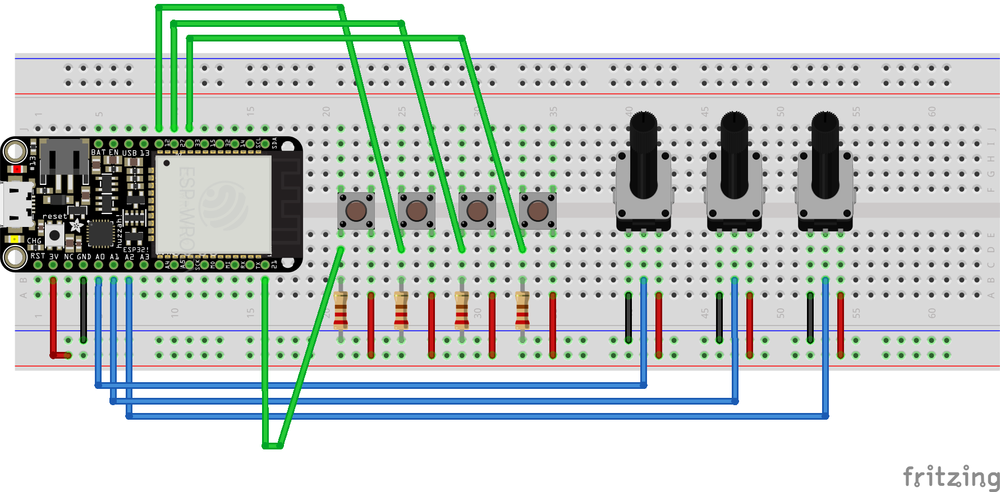
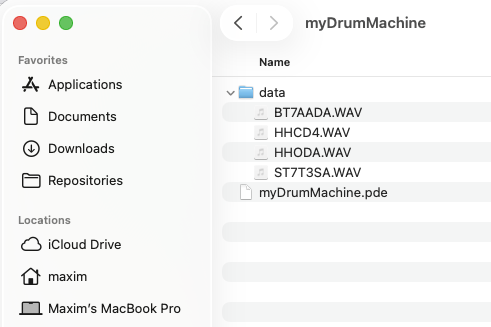

This project shows you how to construct a physical interface for a sound-machine machine using some basic sensors connected to an ESP32, and connect it via Serial protocol (USB) to a Processing sketch that will serve as an audio engine. This project builds on the foundations of serial communication reviewed in this set of tutorials: Serial Data To and From ESP32 with Arduino IDE. If you don't have experience with serial communication, you may want to review those tutorials first.
We will start by building a basic interface with 4 buttons that would trigger different sounds. We will also need some range sensors, like potentiometers, for controlling various sound parameters. The following schematic shows the configurations with 4 buttons and 3 potentiometers, but you can modify it by replacing them with other types of sensors.

This tutorial focuses on the electronics and software aspects of building the sound machine, but I would ncourage you to put some thought into the design of the enclosre and the interface.
The following code assumes that you have already configured your ESP32 with Arduino IDE. If you need help doing that I recommend following the official tutorial from the Adafruit website: ESP32 with Arduino IDE. Also make sure that the connections are following the diagram above. Beyond that the code is relatively simple and should be familiar to you if you've sent serial communication from ESP32 to your computer before.
We define our pins as connected to the sensors (buttons and potentiometers); in the setup function, we initialize the serial communication and set the pin modes to INPUT, since this is how we'll be using them. In the loop function, we read the values from the sensors and send them as text through the serial connection using commas as separators. Notice that we use the analogRead function to read the values from the potentiometers and the digitalRead function to read the values from the buttons. The last print statement is adding a new line character as a transmission terminator, to signify the end of this chunk of values.
#define POT1 A0
#define POT2 A1
#define POT3 A2
#define BUTTON1 21
#define BUTTON2 12
#define BUTTON3 27
#define BUTTON4 33
void setup() {
pinMode(BUTTON1, INPUT);
pinMode(BUTTON2, INPUT);
pinMode(BUTTON3, INPUT);
pinMode(BUTTON4, INPUT);
pinMode(POT1, INPUT);
pinMode(POT2, INPUT);
pinMode(POT3, INPUT);
Serial.begin(9600);
while (!Serial);
}
void loop() {
Serial.print(analogRead(POT1));
Serial.print(',');
Serial.print(analogRead(POT2));
Serial.print(',');
Serial.print(analogRead(POT3));
Serial.print(',');
Serial.print(digitalRead(BUTTON1));
Serial.print(',');
Serial.print(digitalRead(BUTTON2));
Serial.print(',');
Serial.print(digitalRead(BUTTON3));
Serial.print(',');
Serial.println(digitalRead(BUTTON4));
delay(10);
}
Again, if you're having trouble with this please review the foundations of serial communication from this set of tutorials: Serial Data To and From ESP32 with Arduino IDE.
The Processing sketch will sit on the receiving end of this transmission and process the incoming sensor data to play the sound. For this example I will be using an open source library of pre-recorded sounds from a Roland 909 drum machine. You can download the library from this link. The playback is enabled by the processing Sound library which needs to be imported into the sketch along with the Serial library. Some processing distributions do not include the Sound library by default, so you may need to install it separately. For more details on this process please refer to this tutorial.
For this example we'll select 4 drum sounds from the library - feel free to pick any you like - and copy them into the "data" folder within the Processing sketch folder. If you don't have previous experince loading external files into Processing the following image will illustrate the data structure we need to achieve. Files (in this case .wav files) will be stored in a folder named "data" within the Processing sketch folder. This will allow the sketch to acces them without aditional configuration or path segments.

Pay attention to the spelling of the file names in your code to make sure they are loaded correctly.
For the sample playback machine we will be using objects of a class SoundFile. This usage will be illustrated in the linked example, but there is one caveat: multiple file can be played back simultaneously, which is not how a sound/drum machine would typically operates. Which means that we'll need to stop the playback of the previous sound before playing a new one, otherwise the sounds we rick an unpleasant cacophony.
The code below demonstrates how to load and play the SoundFiles by clicking the mouse on the on-screen buttons. This will allow us to test the playback functionality before we connect it to the serial data from the ESP32. So in the setup() function we'll load the 4 new SoundFile objects into an array called myDrums. Then in the draw() function we'll draw the buttons to be clicked with a mouse. Finally, in the mouseReleased() function we'll trigger the playback of the selected sound. Notice that we stop the playback of the previous sound before playing a new one. If you have additional questions about this code I recommend leveling up before the rest of the rest of the tutorail by reviewing the Processing documentation and the ever helpful Coding Train YouTube Channel.
import processing.sound.*;
SoundFile[] myDrums = new SoundFile[4];
float circleRadius = 60;
void setup(){
size(660, 200);
//kick drum:
myDrums[0] = new SoundFile(this, "BT7AADA.WAV");
//snare drum
myDrums[1] = new SoundFile(this, "ST7T3SA.WAV");
//closed hat
myDrums[2] = new SoundFile(this, "HHCD4.WAV");
//open hat
myDrums[3] = new SoundFile(this, "HHODA.WAV");
}
void draw(){
background(0);
//kick
fill(255, 0, 0);
ellipse(100, 100, circleRadius*2, circleRadius*2);
//snare
fill(0, 255, 0);
ellipse(250, 100, circleRadius*2, circleRadius*2);
//closed hat
fill(0, 0, 255);
ellipse(400, 100, circleRadius*2, circleRadius*2);
//open hat
fill(255, 0, 255);
ellipse(550, 100, circleRadius*2, circleRadius*2);
}
void mouseReleased(){
if(dist(100, 100, mouseX, mouseY) < circleRadius){
for(SoundFile d : myDrums){
d.stop();
}
myDrums[0].play();
}
else if(dist(250, 100, mouseX, mouseY) < circleRadius){
for(SoundFile d : myDrums){
d.stop();
}
myDrums[1].play();
}
else if(dist(400, 100, mouseX, mouseY) < circleRadius){
for(SoundFile d : myDrums){
d.stop();
}
myDrums[2].play();
}
else if(dist(550, 100, mouseX, mouseY) < circleRadius){
for(SoundFile d : myDrums){
d.stop();
}
myDrums[3].play();
}
}
Now we are ready to connect our sound machine to the ESP32 and start receiving serial data to trigger the sounds. This will replace the mouse click functionality with serial communication, which will free up the Processing window for display. Feel free to experiement with the type of visual information you'd want to display. It could be a range between a strictly utilitarial listing of data parameters to a trippy sound visualization. Designer's choice!
As before, we will import the serial library, and use serialEvent() function to handle the incoming serial data. The details of this functionality are covered in the Serial Library documentation. Another place to find information about this implementation is again in the previous tutorials on serial communication. Now our setup() and draw() functions look like this:
import processing.sound.*;
import processing.serial.*;
SoundFile[] myDrums = new SoundFile[4];
Serial myConnection;
void setup(){
size(660, 200);
//kick drum:
myDrums[0] = new SoundFile(this, "BT7AADA.WAV");
//snare drum
myDrums[1] = new SoundFile(this, "ST7T3SA.WAV");
//closed hat
myDrums[2] = new SoundFile(this, "HHCD4.WAV");
//open hat
myDrums[3] = new SoundFile(this, "HHODA.WAV");
myConnection = new Serial(this, Serial.list()[1], 9600);
//make sure the number of your serial port is correct and that the baud rate matches the one in your ESP32 code
myConnection.bufferUntil('\n');
}
void draw(){
//feel free to add visualizations here, or just leave it blank
}
We're update the sound playback mechanics to allow us simultaneously play multiple sounds - not something we could have dove with a mouse, but now the buttons allow us to do this!
void serialEvent(Serial conn){
String incoming = conn.readString();
String[] values = split(trim(incoming), ',');
printArray(values);
//make sure this number matches the number of values you're sending via serial:
if(values.length == 7){
if(float(values[0]) > 0){
if(!myDrums[0].isPlaying()){
myDrums[0].play();
}
}
if(float(values[1]) > 0){
if(!myDrums[1].isPlaying()){
myDrums[1].play();
}
}
if(float(values[2]) > 0){
if(!myDrums[2].isPlaying()){
myDrums[2].play();
}
}
if(float(values[3]) > 0){
if(!myDrums[3].isPlaying()){
myDrums[3].play();
}
}
} //end of value number check
}
Unfortunately, another issue comes up - if you press and hold a button the sounds will continue re-triggering over and over. This might be a desirable feature, and some drum machine include this as an options, but it can also inhibit the performance if you want to play the machine live. To address this we will set a set of flags to track the state of each sound. This will allow us to track whether the button was pressed and sounds triggered - but has not been released yet. Only after the button is released will the sound be allowed to play again. Add the declaration of the drumFlags array to the top of your sketch:
import processing.sound.*;
import processing.serial.*;
SoundFile[] myDrums = new SoundFile[4];
boolean[] drumFlags = {true, true, true, true};
Serial myConnection;
Then update the serialEvent() function to check the state of the flags before triggering the sound:
void serialEvent(Serial conn){
String incoming = conn.readString();
String[] values = split(trim(incoming), ',');
printArray(values);
//make sure this number matches the number of values you're sending via serial:
if(values.length == 7){
if(float(values[0]) > 0){
if(!myDrums[0].isPlaying() && drumFlags[0]){
myDrums[0].play();
drumFlags[0] = false;
}
}
else {
drumFlags[0] = true;
}
if(float(values[1]) > 0){
if(!myDrums[1].isPlaying() && drumFlags[1]){
myDrums[1].play();
drumFlags[1] = false;
}
}
else {
drumFlags[1] = true;
}
if(float(values[2]) > 0){
if(!myDrums[2].isPlaying() && drumFlags[2]){
myDrums[2].play();
drumFlags[2] = false;
}
}
else {
drumFlags[2] = true;
}
if(float(values[3]) > 0){
if(!myDrums[3].isPlaying() && drumFlags[3]){
myDrums[3].play();
drumFlags[3] = false;
}
}
else {
drumFlags[3] = true;
}
} //end of value number check
}
Now you will notice that that only if a give sound is not currently playing and its flag is true, it will be triggered on a button press (if value greater than 0). The else statements reset the flags when the button is released.
Note: I know that the code is getting a bit long, and that are multiple ways to refactor it, but I am hoping that this format will provide better clarity.